|
Multi‐User Virtual Environment (MUVE) for Conducting Airplane Evacuation Drills using Gaming Metaphor
Current Students: Oumar Soumare
Past Students: Stephen Otunba, Mike Tice, Aaron Boothe, and Titus Thomas,Pranay Rajeev, Stephon Mackey
Status: Current
Virtual Reality (VR) training has been used for training and education for many years in military and medical fields. Pilots and surgeons have both used VR as a training method in preparation for their respective jobs. Using VR in an evacuation scenario can be useful in industry as it provides users with accurate scaled models of their respective workplaces for a more targeted approach. We have used game creation as a metaphor in creating an experimental setup to study evacuation behavior.
Hypothesis
- Our hypothesis is that the “sense of presence” provided by the multi-user virtual environment will allow running simulations and conducting evacuation drills without the cost and risk of injury to live actors
- Virtual Aircraft Evacuation Drills
- More Cost Effective
- Less Setup Time
- Able to Simulate Real Danger
- Improved Response Time
Research objectives
- To create an experimental design setup for assessing human behavior in emergency evacuation of an aircraft among a team of players in a game set in a virtual environment.
- To create a multi user environment to allow participants in different geographical locations to connect and be able to interact in the VR environment.
- What are the most effective approaches for training and testing evacuations scenarios in emergencies for unexpected events?
- The developed environment is able to create a crash scenario with dangers such as fire, smoke, injured and panicked passengers.
Novel Methodology
- Experimental design approach for assessing human behavior (stress, panic, anger, trust, etc.) in emergency evacuation using Multi-user virtual environment.
- Participant observation and data capture
- Social study of online behavior in virtual worlds
The multi user environment was developed by using different 3D modeling software which include 3DS Max (for 3D models), Unity 3D (3D Gaming Platform). We present three ways for controlling crowd behavior. First by defining rules for computer simulated agents, second by providing controls to the users to navigate in the VR environment as autonomous agents and the third by providing controls to the users with a keyboard/ joystick along with an immersive VR head set in real time. Our contribution lies in our approach to combine these three approaches of behavior in order to perform virtual evacuation drills and virtual tours in a multi user virtual reality environment for university campus. Results from this study can be used to measure the effectiveness of current safety, security, and evacuation procedure for airplane safety.
| 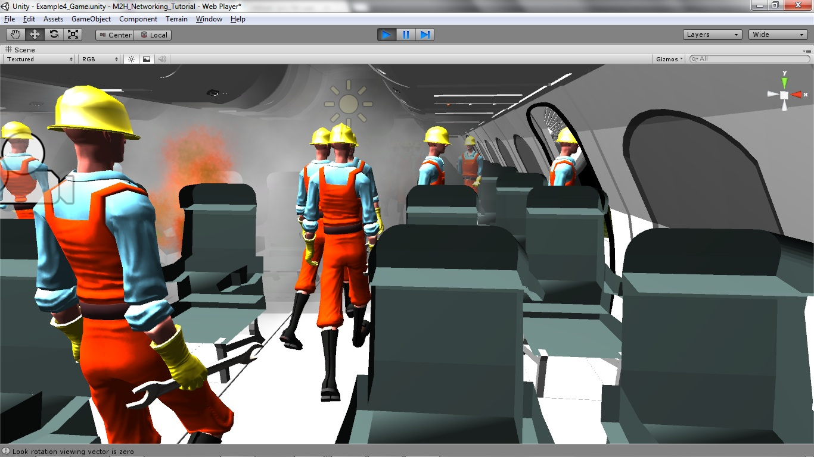 |
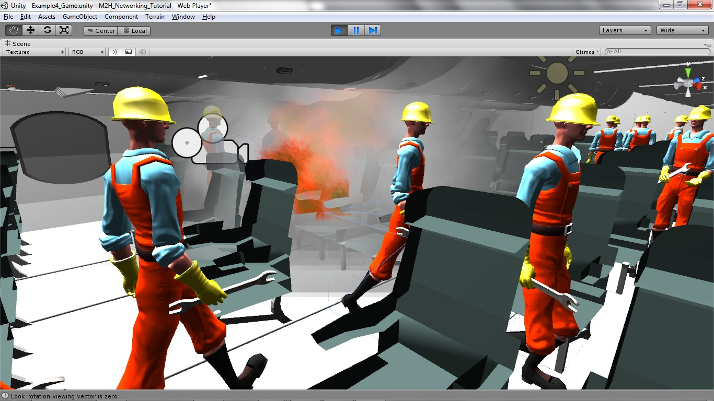 |
| computer simulated avatars and user controlled avatars (both look alike) |
Simulation of fire and smoke in the multi-user VR |
Virtual Evacuation Drills
Virtual reality experiments with virtual evacuation drills are necessary to study human behavior under emergency situations that cannot be evaluated in the real world. The use of collaborative virtual environments to run virtual evacuation drills for an emergency evacuation eliminates risk of injury to participants and allows for the testing of scenarios that could not be tested in real life due to legal issues and possible health risks to participants. Our contribution lies in our approach to combine computer simulated agents and user controlled autonomous agents in a collaborative virtual environment to perform virtual evacuation drills. Results from this study can be used to measure the effectiveness of current procedures, protocols, and the effectiveness of training for airline and security personals. We have condcted user studies for the proposed pilot environment using Unity 3D. The user studies were done for immersive experience using HMD (nVisor SX111 with Advanced Video Control Unit and 3D wall ) and also through the desktop VR environment.
Phase 1: User studies for multi-user evacuation study
We have conducted user studies for the Multi-user airplane evacuation virtual environments. We conducted 40-50 sessions involving two-four users each session. Users experienced the virtual environment in one of two formats
1) Non-Immersive Environment: With desktop computer, mouse and keyboard.
2) Immersive Environment: with a head mounted display and mouse.
| 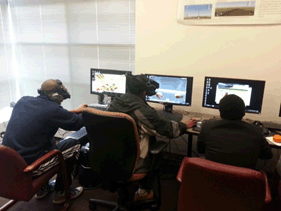 |
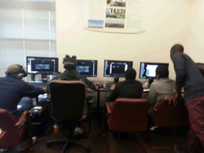 |
| Students participating in the user studies |
Students participating in the user studies in immersive environment |
We collected data during the sessions by screen capturing for evaluation. After the session, the student survey for VR environment was also administered. More than 100 respondents participated in this first phase of the user surveys. The majority (74%) of the survey respondents were male. Approximately a quarter were female. The user base for this first phase of the user study can be described as fairly experienced in gaming. The majority (70%) indicated possession of an intermediate to level of gaming experience. Approximately a third of the respondents indicated gaming experience at a novice level. Therefore this user base had an experiential frame of reference to form opinions and judgments about the VR airplane evacuation multi-user environment.
| 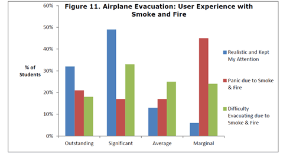 |
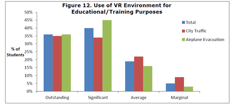 |
| User Experience in Smoke and fire |
Can it be used for educational and training purpose? |
Students reported on their perceptions of the overall quality of the VR environments. The majority of students were positive about the VR environments. 80% reported the quality of the VR environments at the two highest levels on the Likert scale (41% outstanding, 29% significant).
Conclusion
These student survey baseline results demonstrate positive student perceptions about the VR environments related to overall quality, user-controlled objects, and realistic quality of navigational experience, animation, and usefulness as an educational/training tool. The Airplane Evacuation environment led at the highest rating level in the areas of being realistic and training for emergency evacuation. Survey respondents were particularly impressed with the realistic nature of the use of smoke and fire in the emergency evacuation VR. However, user panic was not an issue which would seem at odds with producing realistic and “real time” effects. The panic effects will need further investigation. The continuation of the design process in response to the baseline results along with the inclusion of triangulation of data points in subsequent analyses will be needed to increase the likelihood for realizing this potential.
Phase 2: Newer Version of A319 Aircraft Evacuation for virtual drills using immersive (Oculus Rift) multi-user VR Environment
The newer version of aircraft multi user environment is developed by using Unity 3D (Gaming Platform). The proposed multi user environment has a cloud connectivity to allow the users to participate in the evacuation drills. The evacuation participation can be done in two ways: fully immersive environment and a desktop environment. The fully immersive VR environment is designed for oculus rift head mounted display to give the user a complete immersion. Oculus Rift allows the user to step into the virtual campus environment and have a completely immersive view of the environment. For the client/ server communication we used a plug-in called Photon cloud networking which allows multiple users to participate in the evacuation and virtual tour of the campus from anywhere in the world. The client/players can then join the room on the cloud and will be able to join the VR environment as an avatar. The desktop environment will have an option to communicate via chat with the player who enters that room.
| 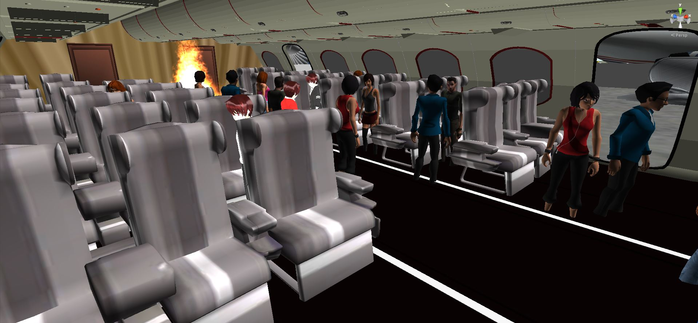 |
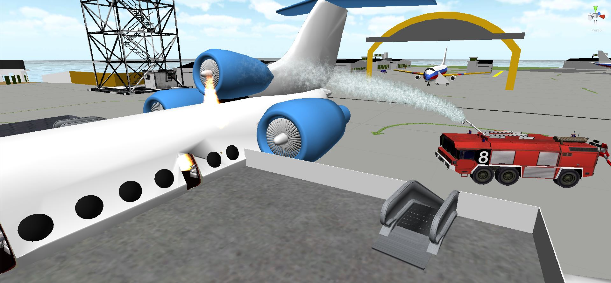 |
| computer controlled avatars (bots) and user controlled avatars partcipating in virtual evacuation drill |
fire brigade throwing water |
| 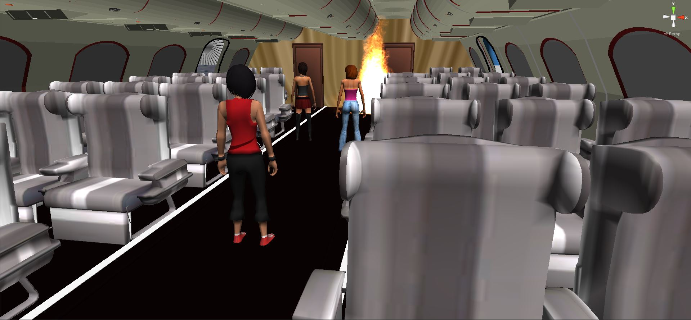 |
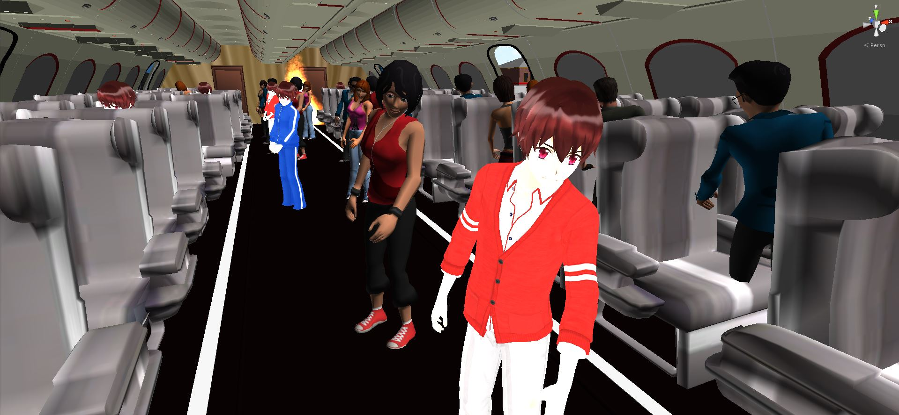 |
| Simulation of fire and smoke in VR |
Virtual evacuation drill with live actors |
We are currently condcting user studies for the newer airplane (A319) evacuation environment using Unity 3D multi-user cloud network. The user studies are done for immersive experience using HMD (oculus rift) and also through the desktop VR environment.
Previous Work
We have earlier explored four multi user environment to allow participants in different geographical locations to connect and be able to interact in the VR environment. After exploration we decided to use Unity 3D for the development of the multi-user airplane evacuation environment.
- Open Sim
- Virtools
- Vizard (Virtual Reality Toolkit)
- Unity 3D
OpenSim |
| |
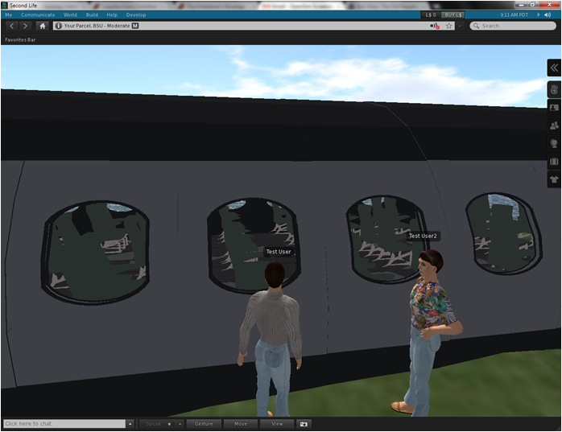 |
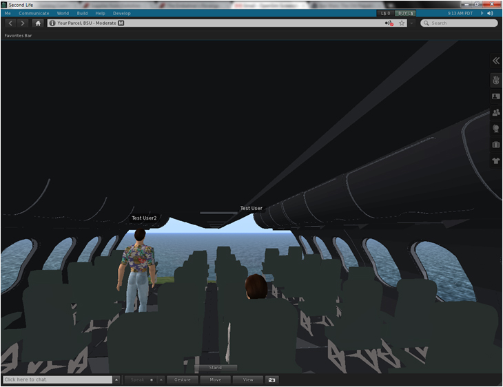 |
| |
Two agents interacting in OpenSim |
Evacuation exercise in OpenSim |
| |
Can be Viewed in Cortona 3 D player |
Click Here to VIEW THE VRML PROJECT 2 |
The metaphors related to play could be games, explorations, intrinsic rewards; and rules and how they can be used in learning games. Using tools such as 3DS Max and 3Dvia Virtools, buildings are modeled as accurately as possible in order to produce a more realistic simulation. The human‐controlled characters are animated such that they are able to walk, run, and interact with the environment. Other characters in the environment are strictly computer controlled and choose the best path to follow goal behavior. A multi‐user environment is implemented to allow multiple users to share the same environment. A reward system is currently under development for choosing the best path or achieving the some goal. The end result of this research is to create an experimental setup to conduct evacuation studies in a Virtual Reality multi‐user environment.
Virtools
Our virtual environment was created using 3D Studio Max and exported to Virtools which is a graphical game development platform. Virtools was used to implement the character and environmental behaviors. Also, the multiuser functionality was incorporated using the Virtools multiuser building blocks. The Virtools multiuser environment is based on a networking engine, which allows users to share content over the web or local networks and allows clients to modify virtual environmental conditions in real time.
| 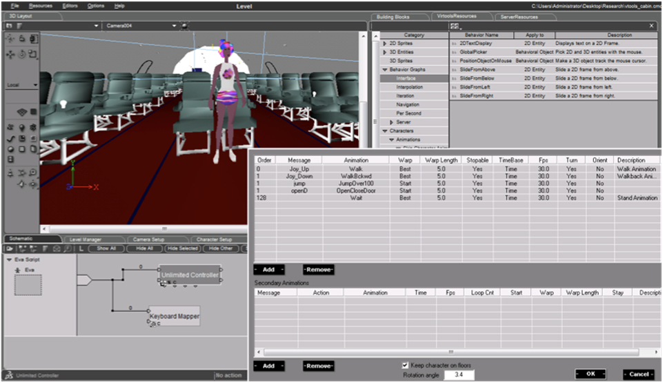 |
 |
| |
|
Our proposed airplane evacuation setup is created using a game development tool called Vizard. Vizard is a 3D development platform to build interactive and immersive 3D content. Vizard also supports numerous devices such as 3D wall, cave, gloves, haptic displays, force-feedback systems, gamepads, and joysticks. Avatars included have built-in human face, body models and an accompanying morph designer to instantly insert virtual humans into existing environments.We have created a multi user environment to allow participants in different geographical locations to connect and experience the simulation together.
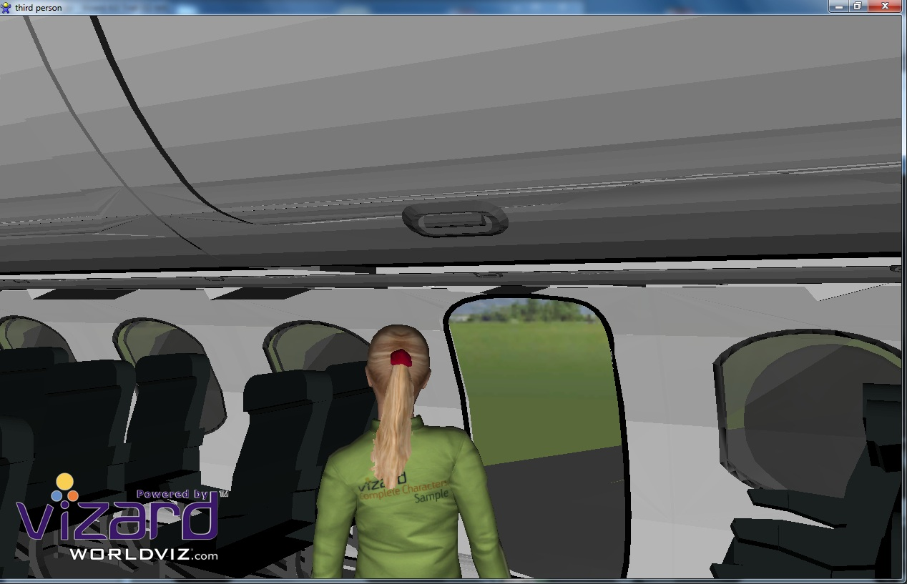
Unity 3D
Our proposed airplane evacuation setup is created using a game development tool called Unity3D. It is a multi user environment to allow participants in different geographical locations to connect and experience the simulation together.
|
| |
 |
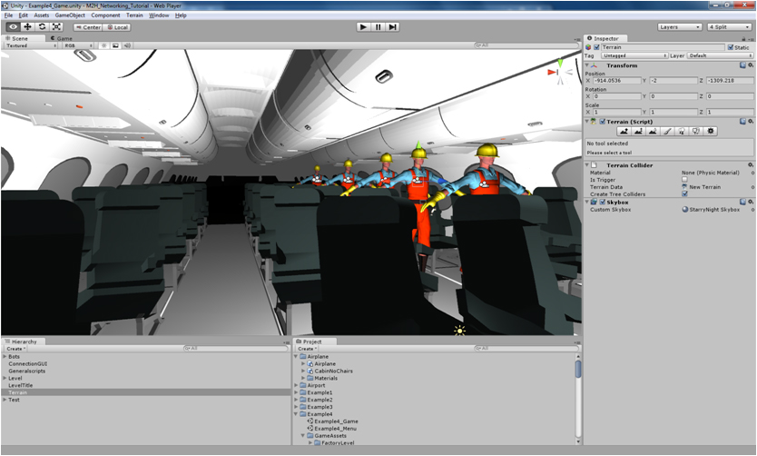 |
| |
View of avatar evacuation |
View from the user controled avatar |
| |
|
|
| |
|
|
| |
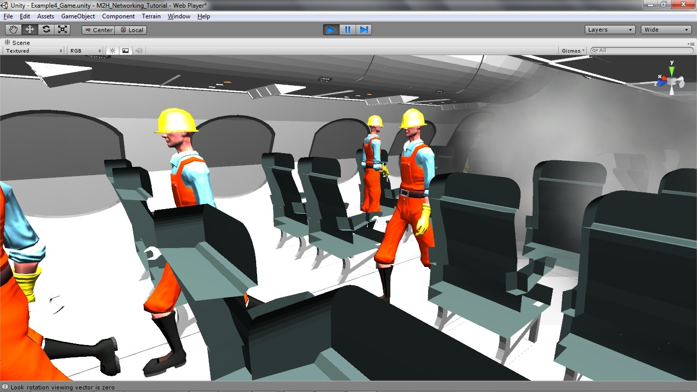 |
|
| |
Evacuation with live actors |
Simulation of fire and smoke in VR |
| |
|
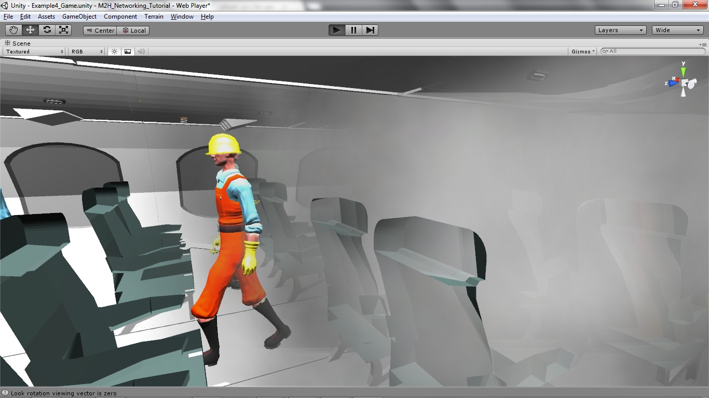 |
| |
computer simulated avatars and user controlled avatars |
Simulation of fire and smoke in the multi-user VR |
| |
 |
|
| |
computer simulated avatars and user controlled avatars |
Simulation of fire and smoke in VR |
| |
|
|
| |
|
|
[Acknowledgement: The authors would like to thank The Chesapeake Information Based Aeronautics Consortium under the National Aeronautics and Space Administration for supporting the project. This study was supported, in part, by Grant NCC1‐03033 and National Science Foundation, Award HRD‐1137541]
Relevant Publications
- Sharma, S, Jerripothula, S., Devreaux, P., "An Immersive Collaborative Virtual Environment of a University Campus for performing Virtual Campus Evacuation drills and Tours for Campus Safety", proceedings of IEEE/ACM International Conference on Collaboration Technologies and Systems (CTS 2015), Atlanta, Georgia, USA,ISBN: 978-1-4673-7646-4, page 84-89, June 01-05, 2015.
- Sharma, S, Jerripothula, S., "An indoor augmented reality mobile application for simulation of building evacuation", proceedings of SPIE conference on the Engineering Reality of Virtual Reality 2015, paper 9392-7, San Francisco, CA, USA, 9 - 10 February 2015.
- Sharma, S, Jerripothula,S., Mackey, S. and Soumare, O, "Immersive Virtual Reality Environment of a Subway Evacuation on a Cloud for Disaster Preparedness and Response Training", proceedings of IEEE Symposium Series on Computational Intelligence (IEEE SSCI 2014), Orlando, Florida, USA,Dec. 9-12, 2014.
- Sharma, S., Otunba,S.,"Collaborative Virtual Environment to Study Aircraft Evacuation for Training and Education", Proceedings of IEEE, International Workshop on Collaboration in Virtual Environments (CoVE -2012), as part of The 2012 International Conference on Collaboration Technologies and Systems (CTS 2012), Denver, Colorado, USA, May 21-25, 2012.
- Sharma, S., Otunba,S.,and Ogunlana, K. , Tripathy, T., "Intelligent Agents in a Goal Finding Application for Homeland Security", Proceedings of IEEE, SoutheastCon 2012, Orlando, Florida, USA, March 14-17, 2012.
- Sharma, S., Otunba,S.,and Han, J., "Crowd Simulation in Emergency Aircraft Evacuation using Virtual Reality", Proceedings of IEEE, 16 th International Conference on Computer Games: AI, Animation, Mobile, Interactive Multimedia, Educational & Serious Games, (CGAMES), Kentucky, USA, July 27-30, 2011.
- Sharma, S. and Otunba,S., “Virtual Reality as a Theme-Based Game Tool for Homeland Security Applications”, Proceedings of ACM Military Modeling & Simulation Symposium (MMS11), Boston, MA, USA, April 4 - 7, 2011.
- Sharma, S. and Shete, S., “Virtual City: A gaming tool for training and education”, Proceedings of ISCA 26th International Conference on Computers and their Applications, New Orleans, Louisiana, USA, March 23-25, 2011.
Posters and Student Presentations
- Stephon Mackey and Dr. Sharad Sharma, "Virtual Reality Subway Evacuation Drill with Multi-User Environment" , 7th Annual Grant Expo, Office of Research and Sponsored Programs (ORSP), Bowie State University, April 22, 2014.
- Roy B. Brown II and Dr. Sharad Sharma, "Emergency Response Simulation Using Virtual Reality", Oral Presentation, at the Emerging Researchers National (ERN) Conference in Science, Technology, Engineering and Mathematics (STEM), hosted by AAAS, EHR and NSF, Washington DC, February 20-22, 2014.
- Wenhao Chen and Dr. Sharad Sharma, "Kinect and Management Features in the Virtual Reality Classroom", Oral Presentation, at the Emerging Researchers National (ERN) Conference in Science, Technology, Engineering and Mathematics (STEM), hosted by AAAS, EHR and NSF, Washington DC, February 20-22, 2014.
- Titus Thomas and Dr. Sharad Sharma, "3D Simulated Emergency Subway Evacuation", Oral Presentation, at the Emerging Researchers National (ERN) Conference in Science, Technology, Engineering and Mathematics (STEM), hosted by AAAS, EHR and NSF, Washington DC, February 28th - March 2nd, 2013. [Won Second Prize in the oral section under category: Computer Sciences and Information Systems]
- Usha Govindaraju and Dr. Sharad Sharma, "Augmented Reality as a Tool for Learning and Safety", Oral Presentation, at the Emerging Researchers National (ERN) Conference in Science, Technology, Engineering and Mathematics (STEM), hosted by AAAS, EHR and NSF, Washington DC, February 28th - March 2nd, 2013.
- Usha Govindaraju,Sailaja Adusumill and Dr. Sharad Sharma, "M-Evac: An Indoor Augmented Reality Mobile Evacuation System, Grant Expo, Office of Research and Sponsored Programs (ORSP), Bowie State University, April 10, 2013
- Stephen Otunba and Dr. Sharad Sharma, "Virtual City: Teaching Traffic Safety though an Immersive Multiuser Environment, Grant Expo, Office of Research and Sponsored Programs (ORSP), Bowie State University, April 10, 2013
- Stephen Otunba and Dr. Sharad Sharma, "Teaching Traffic Safety Through an Immersive Multiuser Environment", Oral Presentation, at the Emerging Researchers National (ERN) Conference in Science, Technology, Engineering and Mathematics (STEM), hosted by AAAS, EHR and NSF, Washington DC, February 28th - March 2nd, 2013.
- Stephen Otunba and Dr. Sharad Sharma, "Evacuation Simulation in a Multiuser Virtual Reality Environment", Oral Presentation, at he Emerging Researchers National (ERN) Conference in Science, Technology, Engineering and Mathematics (STEM), hosted by AAAS, EHR and NSF, Atlanta, GA, February 23-25 2012.
- Aaron Boothe and Dr. Sharad Sharma, "Emergency Airplane Evacuation Using Game Development Toolkit", Oral Presentation, at he Emerging Researchers National (ERN) Conference in Science, Technology, Engineering and Mathematics (STEM), hosted by AAAS, EHR and NSF, Atlanta, GA, February 23-25 2012.[Won Second Prize in the oral section under category: Computer Sciences and Information Systems and Computer Engineering]
- Aaron Boothe, Mike Tice, Zachary Springer, and Dr. Sharad Sharma, "Multi‐User Environment in VR for Evacuation Scenarios Using Gaming Metaphor", Poster Presentation, at he Emerging Researchers National (ERN) Conference in Science, Technology, Engineering and Mathematics (STEM), hosted by AAAS, EHR and NSF, Atlanta, GA, February 23-25 2012.
 VR LABORATORY (C) 2007-2015, ALL RIGHTS RESERVED
VR LABORATORY (C) 2007-2015, ALL RIGHTS RESERVED |


{kind=link}
{kind=link}
{kind=link}
{kind=link}
{kind=link}
{kind=link}
{kind=link}
{kind=link}
{kind=link}
{kind=link}
{kind=link}
{kind=link}
{kind=link}
{kind=link}